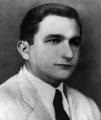

Trajano Coelho Neto nasceu em 1916, em Balsas/MA. Interrompeu os estudos no Colégio Pedro II, em São Luís, após a morte de seu pai, Márcio Coelho. Casou-se em 1938 com Maria Cavalcante Teixeira (Dona Maroquinha), com quem teve seis filhos: Márcio, Maria, Mary, Marisa, Plínio e Rita. Chegou à região dos garimpos dos Piaus (hoje Pium/TO) em 1943, durante o auge da exploração do quartzo, utilizado na indústria bélica da Segunda Guerra Mundial. Tornou-se um dos garimpeiros mais bem-sucedidos, investindo em comércio, pecuária e instalando um moderno parque gráfico no norte de Goiás.
Foi candidato a deputado estadual em 1948 pelo PRP, mas não se elegeu. Em 1951, fundou o jornal Ecos do Tocantins, e em 1957, publicou o Anuário do Tocantins, ambos com forte apoio à criação do Estado do Tocantins. Em 1960, foi eleito prefeito de Pium. No entanto, em 13 de abril de 1961, foi assassinado por desconhecidos às 19h30. O crime nunca foi esclarecido.
